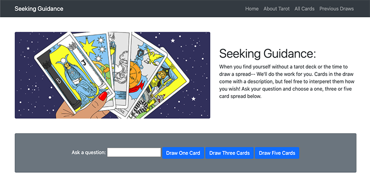

Eleplant
Built with Sinatra.
Allows a user to keep track of their houseplants, watering schedule and plant wishlist.

Teacher's Library
Built with Rails.
Allows a user to keep track of books and lesson plans and add books to lesson plans.

Seeking Guidance
Built with vanilla JS and Rails back end.
A user can generate their own tarot card spread (1, 3 or 5 cards) by asking a question.